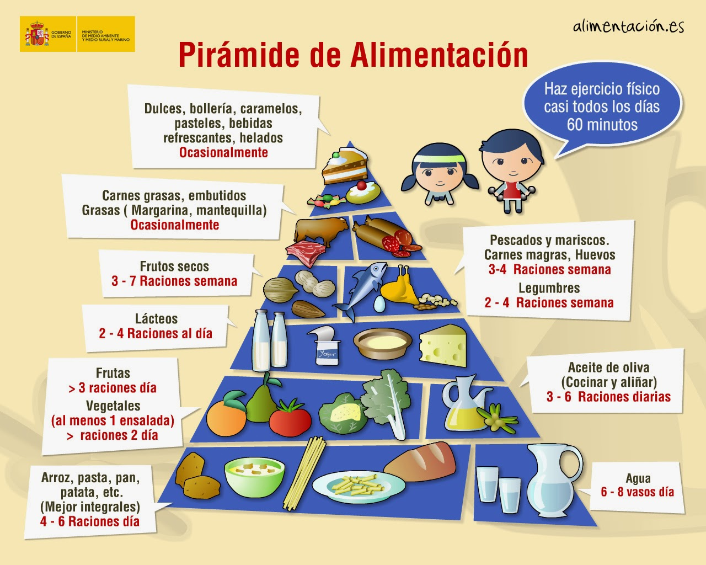

NUTRICIÓN Y ALIMENTACIÓN
Principios básicos de la nutrición
Algunos principios a tener en cuenta en una alimentación saludable son los siguientes
Toda dieta deberá ser completa en su composición: VARIADA, EQUILIBRADA Y ADAPTADA.
VARIADA. Debe contener todo tipo de alimentos.
EQUILIBRADA. Con aporte de todos los nutrientes necesarios para mantener una buena salud.
ADAPTADA. Ajustada a las necesidades de la persona considerando su edad, sexo, actividad, estado de salud, cultura, economía.
Se debe consumir las cantidades necesarias y en la proporción adecuada para evitar problemas de peso y enfermedades. Así, la cantidad de alimentos:
•SUFICIENTE. Debe cubrir las necesidades calóricas del organismo.
•ARMÓNICA. Debe guardar proporción entre los componentes de la dieta.
En la alimentación intervienen todos los sentidos, por lo que el acto de comer debe resultar agradable y satisfactorio. No sólo se valora el tipo o la calidad del alimento,también su aspecto, textura, etc. Esto implica una correcta elección, preparación y presentación de los alimentos.